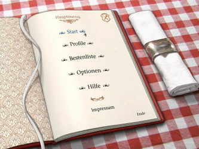
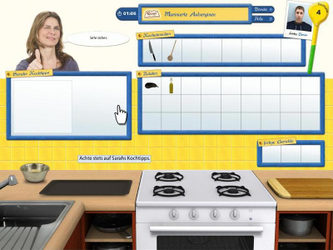

Das große Sarah Wiener Kochspiel
Dieser Artikel wurde für die folgenden Ubuntu-Versionen getestet:
Ubuntu 16.04 Xenial Xerus
Zum Verständnis dieses Artikels sind folgende Seiten hilfreich:
Wine installieren und benutzen, optional
Grundlegende Benutzung von Wine, optional
Ein Programm ohne Menüeintrag starten, optional
Programme zum Menü hinzufügen, optional
Anwendungen hinzufügen, optional
Das große Sarah Wiener Kochspiel  bietet Koch- und Spielspaß für die ganze Familie. Der Spieler beginnt seine vielversprechende Karriere als Lehrling in einem neu eröffneten Restaurant von Sarah Wiener um sich bis zum Küchenchef hochzuarbeiten. 27 Originalrezepte aus den Kochbüchern können nachgekocht werden - virtuell und anschließend in der eigenen Küche. Beim Zubereiten von Gerichten müsen zahlreiche Details beachtet werden. Die Geschicklichkeit und die Zeit spielen, wie im richtigen Leben, eine Rolle.
bietet Koch- und Spielspaß für die ganze Familie. Der Spieler beginnt seine vielversprechende Karriere als Lehrling in einem neu eröffneten Restaurant von Sarah Wiener um sich bis zum Küchenchef hochzuarbeiten. 27 Originalrezepte aus den Kochbüchern können nachgekocht werden - virtuell und anschließend in der eigenen Küche. Beim Zubereiten von Gerichten müsen zahlreiche Details beachtet werden. Die Geschicklichkeit und die Zeit spielen, wie im richtigen Leben, eine Rolle.
|  |  |
| Menü | Spielszene |
Installation¶
Die benötigten Spieledateien können nicht von der CD auf die Festplatte kopiert werden. Um das Problem zu umgehen muss die Installation über Wine erfolgen.
Um an die benötigten Spieledateien zu gelangen installiert man das Spiel, durch anwählen der Datei setup-windows.exe, unter Wine [1] [2] und kopiert den Ordner ~/.wine/drive_c/Programme/SarahWienerKochspiel in das Homeverzeichnis - z.B. nach ~/Spiele/SarahWienerKochspiel. Anschließend öffnet man auf der CD den Ordner mit den Startdateien für Linux. Diese sind unter /media/KOCHSPIEL/dist/default/programfileslinux zu finden. Hier die Ordner common sowie swgk und die beiden Dateien SarahWienerKochspiel.bin* in den Ordner ~/Spiele/SarahWienerKochspiel kopieren. Anschließend Ausführrechte für SarahWienerKochspiel.bin setzen [3].
Über SarahWienerKochspiel.bin kann das Spiel gestartet [4] werden. Auf Wunsch einen Menüeintrag [5] vornehmen.
Hinweis:
Das Spiel startet ohne Sound.
Bedienung¶
Über "Start" beginnt man seine Karriere, nachdem ein Profil angelegt hat. Beim Kochen zieht man mit der Maus die benötigten Zutaten und Utensilien per Drag & Drop an den gewünschten Ort. Bei der Zubereiung des ersten Gerichts wird die Bedienung des Spiels erläutert.
Alternativ kann dies im Booklet erneut nachgelesen werden.
Booklet¶
Das Booklet kann von sarahwienerkochspiel.de  als PDF heruntergeladen werden.
als PDF heruntergeladen werden.
Probleme & Lösungen¶
Error while loading shared libraries¶
Unter 64-Bit kann es vorkommen, dass das Spiel nicht startet. Durch die Installation der folgenden Pakete läuft das Spiel [6] wieder:
libtheora0:i386
libxft2:i386
 mit apturl
mit apturl
Paketliste zum Kopieren:
sudo apt-get install libtheora0:i386 libxft2:i386
sudo aptitude install libtheora0:i386 libxft2:i386

Infobox¶
| Das große Sarah Wiener Kochspiel | |
| Originaltitel: | Das große Sarah Wiener Kochspiel |
| Genre: | Simulation |
| Sprache: | |
| Veröffentlichung: | 2009 |
| Publisher | Villa Hirschberg Online |
| minimale Systemvoraussetzungen: | Intel Pentium IV / Prozessor 1,4 GHz - 512 MB RAM - 64MB Grafikkarte - 500 MB Festplattenspeicher |
| Medien: | CD-ROM |
| Strichcode / EAN / GTIN: | 4017244024897 |
| Läuft mit: | nativ |
- Erstellt mit Inyoka
-
 2004 – 2017 ubuntuusers.de • Einige Rechte vorbehalten
2004 – 2017 ubuntuusers.de • Einige Rechte vorbehalten
Lizenz • Kontakt • Datenschutz • Impressum • Serverstatus -
Serverhousing gespendet von